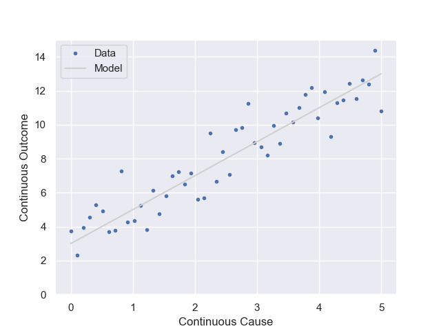
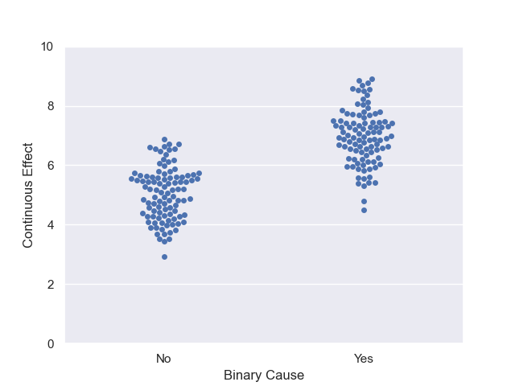
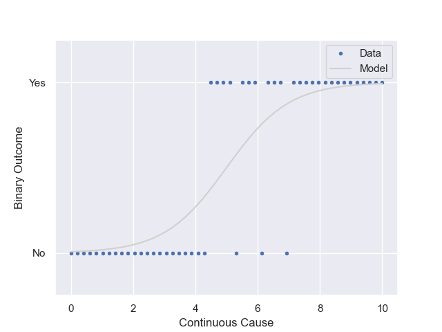

Models
A model is a mathematical representation of the world. Models are most often used to make predictions about the world. These predictions can guide our decisions and make better outcomes more probable.
We will learn how to create simple models that enable us to gain insight into the problem we are investigating.
Why do we model? If we have a cause-and-effect relationship, a model can help us determine how much of the cause we should apply to achieve the desired effect.
Mathematical models consist of equations that reflect relationships in the real world.
Mental models may or may not involve mathematics.
Review
How are models distinct from estimations and relationships?
- Estimations are an educated guess about the state of reality.
- Relationships are a feature of a natural system that we can observe.
Models are artificially constructed using estimations and relationships to gain insight and to improve decision making.
Estimations and Models
Consider the following provocative statement attributed to statistician George Box:
"All models are wrong, but some are useful"
What does he mean by this? Recall the estimations we created in the previous section. To make our estimates about hair surface area, tacos, and the amount of money in a suitcase, we allowed ourselves to make assumptions and simplifications to come up with an estimate. Strictly speaking, our models are wrong. However, this does not mean that our models are not without value.
--
Models
Here are a few ideas about models:
- A model is a simplified representation of a problem we’d like to solve
- A model is an approximation that allows us to think about the world
- Models:
- rectangle for the area of a plot of land
- linear functions
- exponential function for population growth
- a roll of a die or several dice for random events
- a bathtub with a faucet and a drain for atmospheric carbon
- equations from physics classes
- a set of equations to predict motor behavior
Equation Models
These are mathematical functions where each value on the x-axis has one corresponding value on the y-axis.
For a straight line, we have:
$y = m \cdot x + b$
For an exponential, we have:
$y = a \cdot e^{bx}$
Random Variable Models
Many observable things in the world take on different values as if at random. We can model these with a mathematical object called a random variable.
Discrete versus Continuous Variables
Sometimes our random variable can only take on a value that represents countable, often finite, distinct values.
The normal, or Gaussian distribution, is often used to model a continuous random variable for and is written as $\mathcal{N}$.
The binomial distribution (useful for discrete values) is written as $B$.
Linear Regression Model

This relationship has a continuous independent variable with a continuous dependent variable.
When the data appears to have a linear relationship, we can use an equation of a line for model the relationship between the variables.
$$ y =mx + b +\epsilon $$
where $\epsilon$ is the the error term and the error is normally disributed, i.e. $\epsilon\sim\mathcal{N}$. Note: the 'error' term indicates how far we expect the actual data to vary from the line $mx+b$.
When a random variable can only take on two distinct values, we say the random variable is binary.
Binary – Continuous

This relationship has a binary independent variable and a continuous dependent variable.
We could write a model as:
$$ y =\mathcal{N}(\text{mean} + \text{shift}\cdot x) $$
To treat `yes' and 'no' as a binary random variable, we can assign if yes$ = 1$ and no$=0$. We can see that the second term, $\text{shift} \cdot x$ will be the baseline normal distribution for 'no', while the distribution for 'yes' will reflect the predicted shift in means between 'yes' and 'no'.
Binary – Binary

This relationship has a binary independent variable and a binary dependent variable.
We could write a model as:
$$ y = B(\text{probability} + \text{shift} \cdot x) $$
This model tells us that if $x = 0$, there is one probability, and if $x = 1$, the probability changes.
Logistic Regression Model

This relationship has a continuous independent variable and a binary dependent variable.
We could write a model where the probability in our binary random variable changes as the value of $x$ changes.
Usefulness
These models give us a way to conduct thought experiments and understand how a system might respond.
Types of Models
- Top-down (empirical) models
- Use collected data to infer a relationship between two quantities
- Bottom-up (mechanistic) models
- Use a detailed model of underlying behavior to deduce a relationship between two quantities
Downsides of Models
Models are simplified representations of reality used to understand, predict, or make decisions. While models can be powerful and useful, they also have important downsides. Models are not neutral. They involve assumptions, simplifications, and value judgments. In some cases, models can harm people or communities. These harms are often unintentional, meaning the model was not designed to cause harm, but the consequences can still be serious.
Three major sources of harm are opacity, scale, and damage.
Opacity
Opacity refers to how difficult it is to understand how a model works or how it produces its results.
- Many models—especially complex statistical or machine-learning models—are “black boxes.”
-
People affected by the model may not know:
-
What data were used
- What assumptions were made
- Why a particular prediction or decision was produced
When a model is opaque, it becomes hard to question, challenge, or correct it. This can hide bias, errors, or unfair assumptions, and it can make accountability difficult when the model causes harm.
Scale
Scale refers to how widely a model is applied and how many people it affects.
- A model used once or in a small setting may cause limited harm if it is wrong.
- When the same model is used repeatedly, across institutions, or for millions of people, small errors or biases can be multiplied.
For example, a biased model used in hiring, policing, lending, or environmental regulation can affect entire populations rather than individuals. Scale turns minor modeling problems into large social consequences.
Damage
Damage refers to the real-world consequences that result from decisions based on a model.
- Models can influence who gets access to resources, opportunities, or protection.
- Harm may include economic loss, environmental exposure, reduced access to services, or reinforcement of inequality.
Even if the model is statistically sound, the way it is used can still cause damage—especially if decision-makers treat model outputs as objective truth rather than as uncertain estimates.
Examples of Models
- Soto Latent Heat Activity
- Laney and Moses Wildlife Practices
- General Circulation Model
- Predator–Prey Model
- Odum Silver Springs Ecosystem Model
- Camera Trap Population Models
- PM2.5 Relative Risk and Excess Mortality
- Toxin Exposure–Risk Models
- Occupancy Sensor Models
- Climate Change Temperature Models
- Climate Change Economic Models
{kind=link}
Journal Article
Pick a topic of interest and search the scientific literature for models related to your topic. Read the abstract and paper to find a description of a model. Post a brief description of your topic and model in the cloud worksheet and include a link to the paper.